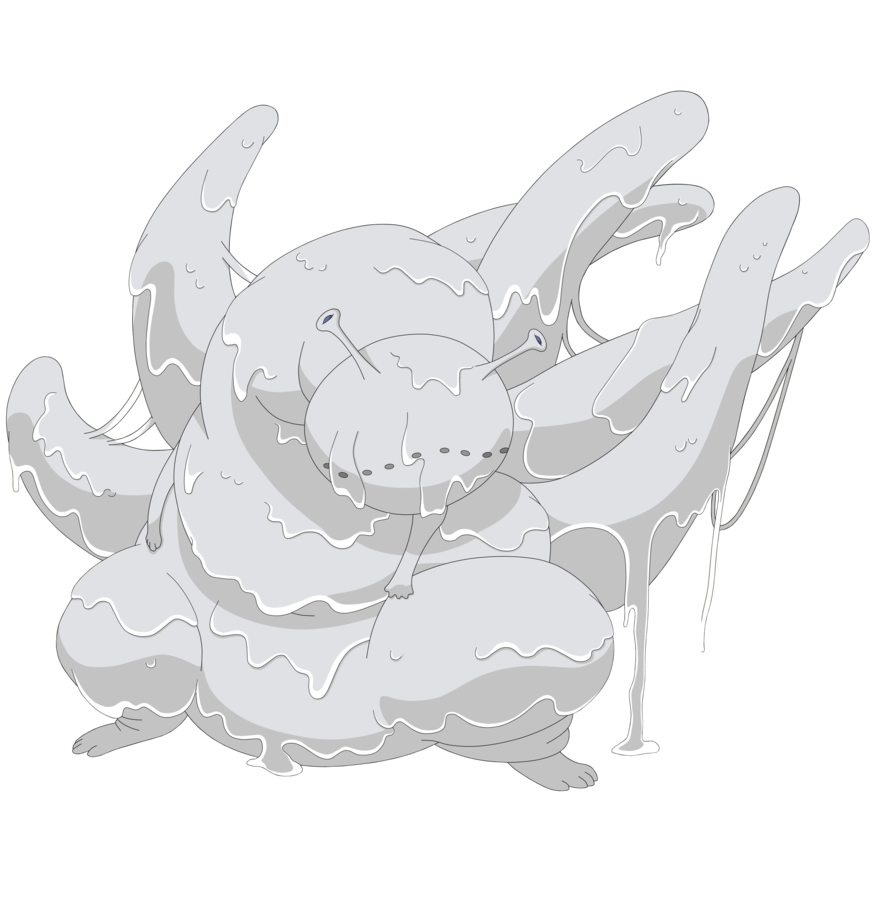

-
Shukaku
HP 750
Lore
Shukaku (守鶴), mais comumente conhecido como 一尾, Ichibi, foi capturado por Deidara e,
em seguida, foi extraído e selado pela Akatsuki.
Jinchūriki: Gaara
Aldeia: Areia (Sunagakure) -
Matatabi
HP 200
Lore
Matatabi (又旅), mais comumente conhecido como ニ尾, Nibi, foi capturado por Hidan e Kakuzu, então extraído e selado pela Akatsuki.
Mais tarde, foi selada em Yugito reencarnada durante a Quarta Guerra Mundial Shinobi.
Jinchūriki: Yugito Nii
Aldeia: Nuvem (Kumogakure) -
Isobu
HP 600

Lore
Isobu (磯撫), mais conhecida como 三尾, Sanbi, foi capturado por Deidara e Tobi, então selado pela Akatsuki.
Mais tarde, foi selado em um Yagura reencarnado durante a Quarta Guerra Mundial Shinobi.
Jinchūriki: Yagura
Aldeia: Névoa (Kirigakure) -
Son Gokü
HP 650
Lore
Son Gokū (孫悟空), mais comumente conhecido como 四尾, Yonbi, foi capturado por Kisame Hoshigaki, depois extraído e selado pela Akatsuki.
Son Gokū mais tarde foi selado em Rōshi reencarnado durante a Quarta Guerra Mundial Shinobi.
Jinchūriki: Rōshi
Aldeia: Pedra (Iwagakure) -
Kokuö
300
Lore
Kokuō (穆王), mais comumente conhecido como 五尾, Gobi, foi capturado, extraído e selado pela Akatsuki. No anime, Kokuō é indicado ter sido uma das duas Bijuus que a Akatsuki capturou antes do início de Naruto: Shippūden.
Mais tarde, foi selado em Han reencarnado durante a Quarta Guerra Mundial Shinobi.
Jinchūriki: Han
Aldeia: Pedra (Iwagakure) -
Saiken
HP 500
Lore
Saiken (犀犬), mais comumente conhecido como 六尾, Rokubi, foi capturado por Nagato e, então extraído e selada pela Akatsuki.
Mais tarde, foi selado em Utakata reencarnado durante a Quarta Guerra Mundial Shinobi.
Jinchūriki: Utakata
Aldeia: Névoa (Kirigakure) -
Chömei
HP 450
Lore
Chōmei (重明), mais comumente conhecido como 七尾, Nanabi, foi capturado, extraído e selado pela Akatsuki. No anime, Chōmei é uma das duas Bijuus que a Akatsuki capturou antes do início de Naruto: Shippūden.
Mais tarde, foi selada em Fū reencarnada durante a Quarta Guerra Mundial Shinobi.
Jinchūriki: Fū
Aldeia: Cachoeira (Takigakure) -
Gyüki
HP 800
Lore
Gyūki (牛鬼), mais comumente conhecido como 八尾, Hachibi, é uma Bijuu que foi selada dentro de Killer B após Blue B, seu tio e seu pai falharem antes dele.
Jinchūriki: Killer B
Aldeia: Nuvem (Kumogakure) -
Kurama
HP 900
Lore
Kurama (九喇嘛), mais comumente conhecido como 九尾, Kyūbi, a raposa foi selada em Mito Uzumaki após a batalha no Vale do Fim, em seguida, em Kushina Uzumaki após a morte de Mito.
Jinchūriki: Naruto Uzumaki
Aldeia: Folha (Konohagakure) -
Juubi
HP 1000
Lore
O Dez-Caudas (十尾 Jūbi) é um demônio primordial ligado à lenda do Eremita dos Seis Caminhos, dividido por ele durante seus momentos finais para a Estátua Demoníaca do Caminho Exterior e as nove Bijuus.
A ambição suprema de Obito Uchiha e Madara Uchiha, é capturar e fundir todos as nove Bijuus de volta para o Dez-Caudas, e tornar-se seu jinchūriki e depois lançar a reflexão de seu Sharingan na lua, lançando um genjutsu conhecido como o Tsukuyomi Infinito, que vai colocar o mundo inteiro sob seu controle.
Jinchūriki: Obito Uchiha
Aldeia: none